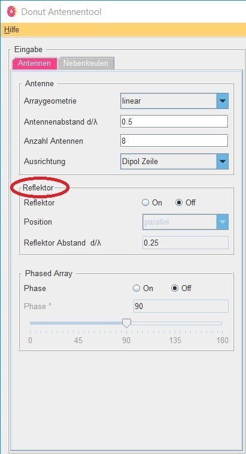

Donut Tutorial
Reflektor
 |
Wahlweise kann ein Reflektor dazugeschalten werden. Dieser ist unendlich gross und fungiert als idealer Spiegel. Wird der Reflektor eingeschaltet, so lassen sich auch Position und Abstand des Reflektors nach belieben variieren. Der Reflektor kann parallel oder senkrecht zur Arrayantenne platziert werden. Die Eingabe des Abstandes erfolgt über Werte in Lambda-Vielfachen. |